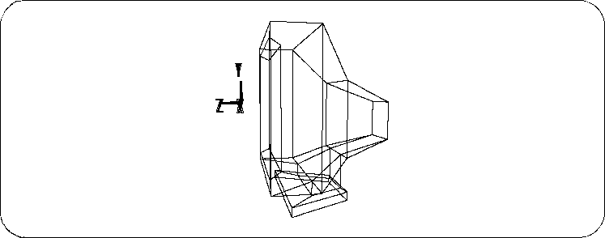
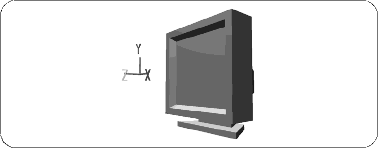

Return to previous page | Return to menu | Go to next page
There are two types of 3D model display methods, wire frame display and shade display, which are switched according to the type of work (the method of switching is described in Chapter 2).
Wire frame display
Represents polygon edges with lines. Since the display is fast, you usually work with this display method.

Shade display
Displays polygons as faces. The 3D model is easy to understand, so it can be used to confirm the shape.
